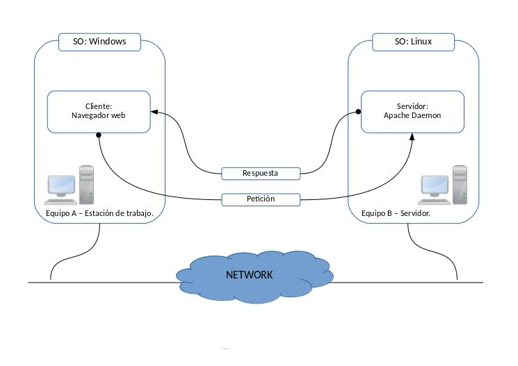
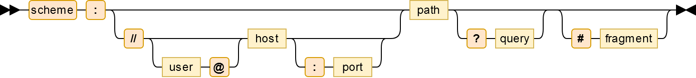
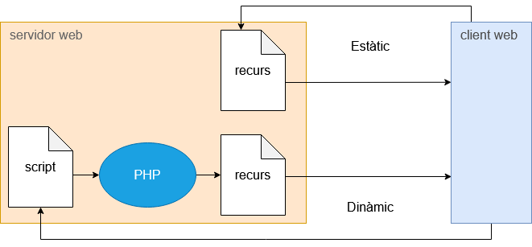
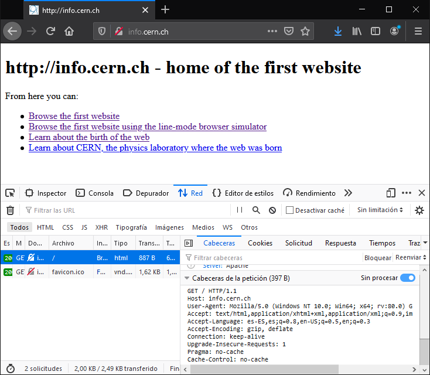
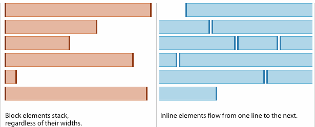

Com funciona una aplicació web
El navegador demana, el servidor respon: què passa entre tots dos quan obres una web.
Què sabràs fer en acabar
- Explicar què és una aplicació web i qui fa cada feina: client i servidor.
- Separar una URL en les seves parts i dir quina arriba al servidor.
- Llegir una petició i una resposta HTTP senzilles.
- Distingir contingut estàtic de contingut dinàmic.
- Enumerar què necessita un servidor per executar un gestor de continguts.
Client i servidor
Una aplicació web és un programa que fas servir amb el navegador, sense instal·lar res a l'ordinador. Es reparteix en dues bandes que parlen per HTTP:
| Banda | Qui és | Què fa |
|---|---|---|
| Client (frontend) | El navegador: Firefox, Chrome… | Inicia la petició, interpreta l'HTML, el CSS i el JavaScript i ho mostra. |
| Servidor (backend) | Un programa com Apache o nginx | Respon la petició: entrega un fitxer o executa un programa que el genera. |

Client i servidor poden tenir sistemes diferents: HTTP és un estàndard i tots dos l'entenen igual.
Les parts d'una URL
La URL identifica un recurs: una pàgina, una imatge, un vídeo. Té fins a set parts:

| Part | Exemple | Per a què serveix |
|---|---|---|
| Esquema | https | Protocol d'accés |
| Usuari | joan@ | Identificació, poc habitual avui |
| Host | info.cern.ch | Nom o IP del servidor |
| Port | :443 | Porta del servidor; s'omet si és la de sempre |
| Camí | /index.html | Quin recurs es vol |
| Consulta | ?q=animals | Dades extra per al programa que respon |
| Fragment | #seccio2 | Punt de la pàgina; no arriba al servidor |
Petició i resposta
HTTP és text. El navegador envia una petició amb un mètode (GET per demanar, POST per enviar dades), el camí i unes capçaleres. El servidor contesta amb un codi d'estat, capçaleres i el contingut.
| Codi | Vol dir |
|---|---|
200 OK | Aquí tens el recurs |
301 / 302 | El recurs és en una altra adreça |
403 Forbidden | Existeix, però no hi pots accedir |
404 Not Found | No existeix |
500 | El programa del servidor ha fallat |
Estàtic i dinàmic
Un recurs estàtic és un fitxer que el servidor entrega tal qual: una pàgina HTML, una imatge. Si recarregues, reps exactament el mateix.
Un recurs dinàmic el genera un programa a cada petició, normalment en PHP, Python o JavaScript. El programa pot llegir la consulta de la URL, consultar una base de dades i construir una resposta diferent per a cada usuari.

La mateixa hora, dues vegades
data.html conté el text «La data del servidor és 20 d'octubre»: digui el que digui el rellotge, sempre respon això. data.php demana l'hora al sistema cada vegada que algú hi entra, i cada recàrrega mostra l'hora del moment. El navegador rep HTML en tots dos casos: no sap si l'ha escrit una persona o un programa.
Què necessita un gestor de continguts
WordPress, Moodle o Nextcloud són aplicacions dinàmiques. Per funcionar demanen sempre el mateix conjunt, la pila LAMP:
| Peça | Paper | Al laboratori |
|---|---|---|
| Linux | Sistema operatiu del servidor | Ubuntu Server 26.04 LTS |
| Apache | Servidor web | Apache 2.4 |
| MariaDB | Base de dades | MariaDB 11.8 |
| PHP | Executa el codi de l'aplicació | PHP 8.5 |
Abans d'instal·lar una aplicació cal comprovar aquests requeriments a la seva documentació: versions de PHP i de base de dades i extensions necessàries.
Veure la conversa HTTP
A Firefox, F12 obre les eines de desenvolupador. A la pestanya Xarxa, recarrega la pàgina i clica un recurs: veuràs la petició, les capçaleres i el codi d'estat. Des del terminal, curl -I mostra només les capçaleres de la resposta:
curl -I http://info.cern.ch/ HTTP/1.1 200 OK Server: Apache Content-Type: text/html

Criteris professionals
- Consulta els requeriments de l'aplicació abans d'instal·lar res.
- Fes servir
httpssempre que hi hagi usuaris i contrasenyes. - Un programa del servidor no ha de fer mai el que diu la URL sense comprovar-ho: qui controla la consulta controlaria el servidor.
Errors habituals
- Pensar que el fragment
#arriba al servidor -
Causa Es confon la URL sencera amb la petició.
Solució El fragment el gestiona el navegador; al servidor només hi arriba fins a la consulta.
- Obrir un
.phpamb doble clic i veure el codi -
Causa Sense servidor no hi ha ningú que l'executi.
Solució Els fitxers dinàmics s'obren sempre a través del servidor web:
http://….
Resum
- El client demana i el servidor respon, sempre per HTTP.
- Una URL té esquema, host, port, camí, consulta i fragment.
- Els codis d'estat diuen com ha anat: 200, 301, 403, 404, 500.
- Estàtic: el fitxer tal qual. Dinàmic: un programa el genera a cada petició.
- Els gestors de continguts necessiten una pila LAMP: Linux, Apache, MariaDB i PHP.
Comprova el que has après
https://web.internal/blog?pag=2#comentaris no arriba al servidor?404?Al currículum
Contingut 1.4 Funcionament dels gestors de continguts.
CA 1.1 Identifica els requeriments necessaris per instal·lar gestors de continguts.
HTML i CSS
L'HTML diu què és cada cosa; el CSS diu com s'ha de veure.
Què sabràs fer en acabar
- Distingir el paper de l'HTML i el del CSS.
- Escriure l'esquelet d'un document HTML5 amb etiquetes semàntiques.
- Aplicar estils amb selectors d'etiqueta, de classe i d'identificador.
- Diferenciar elements de bloc i elements en línia.
- Saber on posar el CSS per personalitzar un tema d'un gestor de continguts.
Estructura i presentació, per separat
HTML és un llenguatge de marques: envolta el contingut amb etiquetes que diuen què és cada cosa, un títol, un paràgraf, un enllaç. No diu com es veu.
CSS és el llenguatge d'estils: colors, tipus de lletra, espais i disposició. Separar-los permet canviar tot l'aspecte d'un lloc sense tocar el contingut, i és exactament el que fa un tema de WordPress o de Moodle.
| HTML | CSS | |
|---|---|---|
| Respon | Què és aquest element? | Com s'ha de veure? |
| Tipus | Llenguatge de marques | Full d'estils |
| Exemple | <h1>Benvinguts</h1> | h1 { color: navy; } |
L'esquelet d'un document
<!DOCTYPE html> <html lang="ca"> <head> <meta charset="UTF-8"> <meta name="viewport" content="width=device-width, initial-scale=1"> <title>Títol de la pestanya</title> <link rel="stylesheet" href="styles.css"> </head> <body> <!-- contingut visible --> </body> </html>
| Peça | Funció |
|---|---|
<!DOCTYPE html> | Declara HTML5 |
lang="ca" | Idioma: ajuda els lectors de pantalla i els cercadors |
<head> | Metadades, títol i enllaç al CSS; no es veu |
viewport | Imprescindible perquè es vegi bé al mòbil |
<body> | Tot el que es mostra |
Etiquetes que més faràs servir
| Etiqueta | Serveix per |
|---|---|
<h1>…<h6> | Títols per nivells; un sol h1 per pàgina |
<p> | Paràgraf |
<strong> · <em> | Text important · èmfasi |
<ul> · <ol> · <li> | Llista sense ordre · ordenada · element |
<a href="…"> | Enllaç |
<img src="…" alt="…"> | Imatge; alt és obligatori |
<table> · <tr> · <th> · <td> | Taula de dades |
<form> · <label> · <input> | Formulari |
<header> · <nav> · <main> | Capçalera · navegació · contingut principal |
<section> · <article> · <footer> | Secció · peça independent · peu |
Com s'escriu una regla CSS
selector {
propietat: valor;
}
| Selector | Exemple | S'aplica a |
|---|---|---|
| D'etiqueta | p { color: #333; } | Tots els <p> |
| De classe | .destacat { … } | Els elements amb class="destacat" |
| D'identificador | #capcalera { … } | L'únic element amb id="capcalera" |
El CSS pot anar en línia (style="…"), intern (<style> al head) o extern (styles.css enllaçat). L'extern és el bo: un sol fitxer serveix per a totes les pàgines. Si dues regles xoquen, guanya la més específica: identificador sobre classe, classe sobre etiqueta.
Elements de bloc i elements en línia
| Bloc | En línia | |
|---|---|---|
| Exemples | div, p, h1, section, ul | span, a, strong, img, code |
| Ocupa | Tota l'amplada disponible | Només el que necessita |
| Comença | En una línia nova | A continuació del que hi ha |
width i height | Funcionen | S'ignoren |
| Pot contenir | Blocs i elements en línia | Només elements en línia |

La propietat display ho canvia: inline-block es col·loca en línia però accepta mides, i és el truc clàssic per a un menú horitzontal.
Un menú horitzontal
<nav> <a href="#" class="menu">Inici</a> <a href="#" class="menu">Serveis</a> <a href="#" class="menu">Contacte</a> </nav>
.menu {
display: inline-block;
width: 120px;
padding: 10px 0;
text-align: center;
background: #e3f2fd;
text-decoration: none;
}
.menu:hover { background: #bbdefb; }
El CSS addicional d'un tema
Als gestors de continguts no s'edita el fitxer del tema: la pròxima actualització el trepitjaria. WordPress té un apartat de CSS addicional i Moodle un camp de SCSS en brut on s'afegeixen regles pròpies. Són les mateixes regles d'aquesta pàgina, aplicades sobre les classes que el tema ja posa a l'HTML.
Inspeccionar qualsevol pàgina
Clic dret sobre un element i Inspecciona: veuràs a l'esquerra l'HTML i a la dreta les regles CSS que s'hi apliquen. Pots canviar un valor i veure l'efecte a l'instant, sense tocar cap fitxer. És la manera de trobar la classe que has de fer servir al CSS addicional d'un tema.
Criteris professionals
- Fes servir etiquetes pel que signifiquen, no per com es veuen.
- Posa sempre
alta les imatges ilabelals camps. - CSS en fitxer extern, i classes millor que identificadors.
- Valida l'HTML amb el validador del W3C.
- No edites els fitxers d'un tema: fes servir el CSS addicional o un tema fill.
Errors habituals
- L'estil no s'aplica
-
Causa La ruta de
<link href>no és correcta, o el selector no coincideix amb la classe.Solució Mira a la pestanya Xarxa si
styles.cssdona 404 i, a l'inspector, quines regles arriben a l'element. widthno fa res-
Causa L'element és en línia.
Solució Canvia-li el
displayablockoinline-block. - Un
<div>dins d'un<span> -
Causa Un element en línia no pot contenir un bloc.
Solució Canvia el contenidor per un element de bloc.
Resum
- HTML: estructura i significat. CSS: aspecte.
- Tot document té
doctype,html,headibody. - Selectors d'etiqueta, de classe (
.) i d'identificador (#). - Bloc: ocupa l'amplada i admet mides. En línia: només el seu contingut.
- Als gestors de continguts, el CSS propi va al CSS addicional del tema.
Comprova el que has après
<p class="avis">?Al currículum
Contingut 1.3 Utilització de la interfície gràfica. Personalització de l'entorn. Funcionalitats proporcionades pel gestor de continguts. Sindicació.
CA 1.3 Personalitza la interfície del gestor de continguts.
Capses i disposició
Cada element és una capsa: com es mesura, com es mou i com es reparteix l'espai.
Què sabràs fer en acabar
- Explicar les quatre capes del model de capsa.
- Calcular l'amplada real d'un element i fer servir
box-sizing. - Triar el valor de
positionadequat per a cada cas. - Distribuir elements amb Flexbox i amb Grid.
- Adaptar una pàgina al mòbil amb media queries.
El model de capsa
El navegador tracta cada element com una capsa rectangular amb quatre capes, de dins cap a fora:

| Capa | Propietat | Com és |
|---|---|---|
| Contingut | width, height | On hi ha el text o la imatge |
| Farciment | padding | Espai interior; agafa el fons de l'element |
| Vora | border | La línia; gruix, estil i color |
| Marge | margin | Espai exterior, transparent; pot ser negatiu |
Quant ocupa de debò
Per defecte (box-sizing: content-box) l'amplada només compta el contingut, i el farciment i la vora s'hi sumen. Amb border-box, l'amplada que escrius ja ho inclou tot menys el marge.
width: 200px; padding: 20px; border: 5px | Amplada visible |
|---|---|
content-box | 200 + 40 + 10 = 250 px |
border-box | 200 px |

Per això gairebé tots els projectes comencen amb aquesta regla:
*, *::before, *::after {
box-sizing: border-box;
}
Posicionar amb position
| Valor | Referència | Surt del flux? |
|---|---|---|
static | Cap: ignora top i left; és el valor per defecte | No |
relative | La seva posició normal | No: deixa el forat |
absolute | L'avantpassat posicionat més proper, o la pàgina | Sí |
fixed | La finestra; no es mou en fer scroll | Sí |
sticky | Relatiu fins a un llindar; després, fix | No |

La parella habitual és un pare amb relative i un fill amb absolute: el fill es col·loca respecte del pare, per exemple un text sobre una imatge.
Flexbox i Grid
Per repartir espai entre elements no cal position: hi ha dos sistemes pensats per a això.
| Flexbox | Grid | |
|---|---|---|
| Dimensions | Una: fila o columna | Dues: files i columnes |
| S'activa amb | display: flex | display: grid |
| Propietats clau | justify-content, align-items, flex-wrap, gap | grid-template-columns, grid-template-areas, gap |
| Ideal per | Menús, barres, targetes en fila | L'estructura de tota la pàgina |
Centrar i fer una graella
Centrar una capsa horitzontalment i verticalment dins de la pantalla:
.contenidor {
display: flex;
justify-content: center; /* eix horitzontal */
align-items: center; /* eix vertical */
min-height: 100vh;
}
Una graella de targetes que s'adapta sola a l'amplada:
.targetes {
display: grid;
grid-template-columns: repeat(auto-fit, minmax(200px, 1fr));
gap: 20px;
}
Una pàgina que es veu bé al mòbil
Més de la meitat de les visites arriben des del mòbil. Les media queries apliquen regles només a partir d'una amplada: es dissenya per a pantalla petita i s'amplia per a la gran (mobile first). Els temes dels gestors de continguts ja ho fan, i el CSS addicional ha de respectar-ho.
.pagina { display: block; }
@media (min-width: 768px) {
.pagina {
display: grid;
grid-template-columns: 220px 1fr;
}
}
Veure la capsa a l'inspector
A l'inspector del navegador, la pestanya Disposició dibuixa el model de capsa de l'element seleccionat amb els valors de cada capa. Els contenidors flex i grid porten una etiqueta al costat: si hi fas clic, el navegador en pinta les línies sobre la pàgina.
Criteris professionals
- Posa
box-sizing: border-boxa tot el document. - Grid per a l'estructura, Flexbox per als components.
- Deixa
position: absoluteper a detalls, no per maquetar la pàgina. - Prova sempre la pàgina a 375 px d'amplada.
- Deixa prou farciment als botons perquè es puguin tocar amb el dit.
Errors habituals
- Dues columnes al 50 % no hi caben
-
Causa Amb
content-box, el farciment i la vora se sumen al 50 %.Solució Fes servir
border-boxogapamb Grid. - L'element
absolutese'n va a la cantonada de la pàgina -
Causa Cap avantpassat té
positiondiferent destatic.Solució Posa
position: relativeal pare que ha de fer de referència. justify-contentno fa res-
Causa S'ha posat als fills, no al contenidor.
Solució Les propietats de Flexbox i Grid van al contenidor.
Resum
- Capsa: contingut,
padding,borderimargin. border-boxfa que l'amplada escrita sigui l'amplada real.relativees mou des del seu lloc;absolute, respecte del pare posicionat;fixed, respecte de la finestra.- Flexbox reparteix en una dimensió; Grid, en dues.
- Les media queries adapten la pàgina a cada pantalla.
Comprova el que has après
content-box, width: 300px, padding: 10px i border: 5px, quant fa d'ample la capsa visible?justify-content: center?Al currículum
Contingut 1.3 Utilització de la interfície gràfica. Personalització de l'entorn. Funcionalitats proporcionades pel gestor de continguts. Sindicació.
CA 1.3 Personalitza la interfície del gestor de continguts.
Gestors de continguts
Publicar i mantenir un web sense escriure cada pàgina a mà.
Què sabràs fer en acabar
- Explicar què és un gestor de continguts (CMS) i per què s'utilitza.
- Identificar els requeriments per instal·lar-lo en un sistema lliure o propietari.
- Comparar WordPress, Joomla, Drupal i MediaWiki.
- Distingir entrades, pàgines, categories, menús i ginys.
- Explicar què fan els temes i les extensions.
- Dir què és la sindicació RSS.
Què és un CMS
Un gestor de continguts (Content Management System) és una aplicació web per crear, organitzar i publicar continguts des del navegador. El contingut viu a la base de dades i el CMS construeix cada pàgina en el moment de demanar-la, amb el disseny del tema.
Separa tres feines que abans feia una sola persona: qui escriu, qui dissenya i qui administra el servidor. Així, una redactora pot publicar sense saber HTML.
Els més coneguts
| CMS | Punt fort | Web |
|---|---|---|
| WordPress | El més estès; blocs, webs corporatives i botigues amb WooCommerce | wordpress.org |
| Joomla | Webs amb molts usuaris i continguts multilingües de sèrie | joomla.org |
| Drupal | Llocs grans i complexos; administracions públiques | drupal.org |
| MediaWiki | Wikis amb historial de canvis; el de Viquipèdia | mediawiki.org |
Tots quatre són lliures, fets en PHP i funcionen sobre una pila LAMP. N'hi ha de propietaris i allotjats, com Wix o Squarespace, però no s'hi controla el servidor ni les dades.
Què cal per instal·lar-lo
Abans d'instal·lar un gestor es miren els seus requeriments a la documentació oficial. Si el servidor no els compleix, la instal·lació falla a mitges o el lloc funciona amb errors.
| Requeriment | Què es comprova |
|---|---|
| Servidor web | Apache o nginx, amb reescriptura d'adreces per als enllaços amigables |
| Llenguatge | La versió de PHP que suporta i les extensions que demana |
| Base de dades | MariaDB o MySQL, una base de dades i un usuari propis |
| Recursos | Espai de disc, mida màxima de pujada i memòria de PHP |
| Xifratge | HTTPS amb un certificat vàlid quan es publica |
Es pot instal·lar en un sistema lliure (Linux amb Apache, MariaDB i PHP, la pila LAMP) o en un de propietari (Windows Server amb IIS i PHP). Els requeriments són els mateixos; canvia com s'instal·la cada peça. La majoria d'allotjaments i servidors reals fan servir Linux.
Com s'organitza el contingut
| Peça | Què és | A WordPress |
|---|---|---|
| Entrada | Contingut datat que s'ordena per data; té comentaris | Entrades |
| Pàgina | Contingut estable, sense data: «Qui som», «Contacte» | Pàgines |
| Categoria i etiqueta | Classifiquen les entrades per tema | Entrades → Categories |
| Mèdia | Imatges i fitxers pujats | Mèdia |
| Menú | Enllaços de navegació del lloc | Aparença → Editor |
| Giny (bloc) | Peça reutilitzable: cercador, darreres entrades, calendari | Editor del lloc |
Temes, extensions i sindicació
El tema decideix l'aspecte: plantilles HTML i CSS que envolten el contingut. Canviar de tema canvia el disseny i manté els continguts.
Les extensions (plugins) afegeixen funcions: formularis, botiga, traduccions, còpies de seguretat. Cadascuna és codi de tercers que s'executa al servidor, i per tant s'ha de triar i actualitzar amb cura.
La sindicació publica les últimes entrades en un fitxer RSS o Atom. Un lector de notícies o un altre web s'hi subscriu i rep els continguts nous sense visitar la pàgina.
El mateix text, dues aparences
Una escola publica una entrada «Jornada de portes obertes». Amb el tema per defecte surt amb fons blanc i lletra negra. L'administrador activa un tema amb els colors del centre: l'entrada no s'ha tocat, però tot el web ha canviat. Si instal·la una extensió de traducció, la mateixa entrada pot tenir versió en castellà i en anglès.
Botigues virtuals
Un CMS amb una extensió de comerç electrònic és una botiga: WooCommerce converteix WordPress en una botiga amb productes, categories, carret i pagaments. També hi ha aplicacions fetes només per vendre, com PrestaShop o OpenCart. Totes s'instal·len igual que un CMS i demanen el mateix: una pila LAMP, una base de dades i un usuari administrador.
Trobar el feed d'un web
Afegeix /feed/ a l'adreça d'un lloc WordPress i veuràs el fitxer RSS: text XML amb el títol, l'enllaç i la data de cada entrada. És el que llegeix un lector de notícies.
Criteris professionals
- Tria el CMS pel que ha de fer el lloc, no per costum.
- Fes servir temes i extensions del directori oficial i amb actualitzacions recents.
- Instal·la només les extensions que facin falta: cada una és codi que s'executa.
- Pàgines per al contingut estable; entrades per a les notícies.
Errors habituals
- Fer una entrada per a «Contacte»
-
Causa Es confon entrada amb pàgina.
Solució El contingut que no caduca va en una pàgina i s'enllaça des del menú.
- Canviar de tema i perdre els retocs
-
Causa S'havien fet editant els fitxers del tema anterior.
Solució Els retocs van al CSS addicional o a un tema fill.
Resum
- Un CMS publica continguts des del navegador; el contingut és a la base de dades.
- Abans d'instal·lar, es comproven els requeriments: servidor web, PHP, base de dades, recursos i HTTPS.
- WordPress, Joomla, Drupal i MediaWiki: lliures, en PHP i sobre LAMP.
- Entrades amb data, pàgines estables, categories, menús i ginys.
- El tema decideix l'aspecte; les extensions afegeixen funcions.
- La sindicació RSS publica les novetats perquè altres s'hi subscriguin.
Comprova el que has après
Al currículum
Contingut 1.1 Instal·lació en sistemes operatius lliures i propietaris.
Contingut 1.3 Utilització de la interfície gràfica. Personalització de l'entorn. Funcionalitats proporcionades pel gestor de continguts. Sindicació.
Contingut 1.4 Funcionament dels gestors de continguts.
CA 1.1 Identifica els requeriments necessaris per instal·lar gestors de continguts.
CA 1.6 Instal·la i configura els mòduls i menús necessaris.
Usuaris i rols
Qui pot fer què en un lloc on treballen moltes persones.
Què sabràs fer en acabar
- Explicar la diferència entre usuari, rol i capacitat.
- Descriure els cinc rols de WordPress.
- Triar el rol adequat per a cada persona segons la feina.
- Aplicar el principi de mínim privilegi.
Usuari, rol i capacitat
Un usuari és una persona amb nom d'usuari, correu i contrasenya. Una capacitat és un permís concret: publicar entrades, editar pàgines, instal·lar extensions. Un rol és un paquet de capacitats amb nom, que s'assigna als usuaris.
Assignar rols en lloc de permisos solts fa la gestió senzilla: quan entra una redactora nova, se li dona el rol «Autor» i ja té exactament el que necessita.
Els cinc rols de WordPress
| Rol | Pot | No pot |
|---|---|---|
| Administrador | Tot: usuaris, temes, extensions, configuració | — |
| Editor | Publicar i editar entrades i pàgines de tothom; moderar comentaris | Tocar usuaris, temes o extensions |
| Autor | Publicar i editar les seves entrades; pujar imatges | Editar el contingut d'altres; crear pàgines |
| Col·laborador | Escriure les seves entrades | Publicar-les ni pujar imatges |
| Subscriptor | Editar el seu perfil; comentar on calgui registre | Crear contingut |
Els noms en anglès (Administrator, Editor, Author, Contributor, Subscriber) són els que surten a la documentació oficial.
Qui pot fer cada tasca
| Tasca | Admin. | Editor | Autor | Col·lab. |
|---|---|---|---|---|
| Escriure entrades | Sí | Sí | Sí | Sí |
| Publicar entrades | Sí | Sí | Sí | No |
| Editar entrades d'altres | Sí | Sí | No | No |
| Crear pàgines i categories | Sí | Sí | No | No |
| Canviar tema i ginys | Sí | No | No | No |
| Gestionar usuaris i extensions | Sí | No | No | No |
La revista de l'institut
La cap de redacció revisa i publica: Editor. Tres alumnes escriuen articles que ella ha d'aprovar: Col·laborador. Un professor que publica la seva secció sense revisió: Autor. Les famílies que volen comentar: Subscriptor. Només una persona, la que manté el servidor, és Administradora.
Rols a altres aplicacions
La idea es repeteix a totes les aplicacions del mòdul. Moodle té gestor, professor, professor sense permís d'edició, estudiant i convidat, i el rol es pot donar a tot el lloc o només en un curs. Nextcloud treballa amb grups i permisos per carpeta compartida. Canvien els noms; el principi és el mateix.
Provar un rol sense adivinar
La manera fiable de saber què veu un rol és entrar-hi. Crea un usuari de prova per a cada rol, obre una finestra privada del navegador i inicia-hi sessió: el tauler només mostrarà els menús que aquell rol pot fer servir.
Criteris professionals
- Mínim privilegi: dona el rol més baix que permeti fer la feina.
- Com menys administradors, millor; mai un compte d'administrador compartit.
- Un compte per persona, amb el seu correu: així queda registrat qui ha fet cada canvi.
- Revisa i esborra els comptes de qui ja no participa.
Errors habituals
- Tothom és administrador «per no tenir problemes»
-
Causa Es confon comoditat amb gestió.
Solució Qualsevol compte robat podria esborrar el lloc. Assigna el rol mínim.
- Un col·laborador no pot afegir imatges
-
Causa El rol no té la capacitat de pujar fitxers.
Solució És el comportament previst: o un editor les afegeix, o se li dona el rol d'autor.
Resum
- Capacitat: un permís. Rol: un paquet de capacitats. Usuari: la persona.
- WordPress: administrador, editor, autor, col·laborador i subscriptor.
- El col·laborador escriu però no publica; l'autor publica el seu.
- Mínim privilegi: el rol més baix que permeti fer la feina.
Comprova el que has après
Al currículum
Contingut 1.2 Creació d'usuaris i grups d'usuaris.
CA 1.2 Gestiona usuaris amb rols diferents.
CA 1.8 Habilita fòrums i estableix regles d'accés.
Mantenir un gestor de continguts
Instal·lar-lo és el primer dia; actualitzar-lo, protegir-lo i copiar-lo és cada dia.
Què sabràs fer en acabar
- Explicar per què s'han d'aplicar les actualitzacions, sobretot les de seguretat.
- Enumerar els mecanismes de seguretat que ofereix el propi gestor.
- Dir què s'ha de copiar per tenir una còpia de seguretat completa.
- Descriure els passos per moure un lloc a un allotjament.
- Planificar les proves de funcionament després d'un canvi.
Actualitzar
Un CMS té tres coses que s'actualitzen: el nucli, el tema i les extensions. La majoria d'atacs a WordPress no entren pel nucli sinó per extensions velles amb errors coneguts.
| Tipus | Exemple | Quan aplicar-la |
|---|---|---|
| Seguretat i manteniment | 7.1 → 7.1.1 | De seguida; WordPress ho fa sol |
| Versió principal | 7.0 → 7.1 | Després de fer còpia i provar-la |
| Extensió o tema | Avís al tauler | Aviat, llegint què canvia |
Protegir
Abans d'instal·lar extensions de seguretat, cal fer servir el que el gestor ja porta:
- Contrasenyes robustes i un compte per persona, amb el rol mínim (T1.5).
- Actualitzacions automàtiques de seguretat activades.
- Esborrar els temes i les extensions que no es fan servir.
- Comentaris moderats o només per a usuaris registrats.
- HTTPS sempre que s'entri al tauler.
- L'estat del lloc: WordPress té Eines → Salut del lloc, que avisa del que falla.
A més, el servidor ha de complir la seva part: permisos de fitxers correctes, sense 777, i la base de dades accessible només des del mateix servidor.
Copiar
Un lloc fet amb un CMS té dues meitats i una còpia de seguretat les necessita totes dues:
| Meitat | Hi ha | Com es copia |
|---|---|---|
| Base de dades | Entrades, pàgines, usuaris, configuració | Un bolcat SQL |
| Fitxers | Codi, temes, extensions i imatges pujades | Un arxiu comprimit |
Una còpia que no s'ha provat de restaurar no és una còpia. I una còpia guardada al mateix servidor es perd amb el servidor.
Portar-lo a un allotjament
Treballar en local i publicar després és el flux normal. Moure un lloc és una còpia i una restauració en una altra màquina, amb una dificultat afegida: la base de dades guarda l'adreça del lloc dins de moltes taules. Si el lloc era http://wordpress.internal i passa a https://elmeuweb.com, cal substituir-la a tot arreu, amb una eina que respecti les dades serialitzades.
L'extensió oblidada
Un web d'una associació funciona anys sense que ningú hi entri. Una extensió de galeria que ja no s'utilitzava té un error publicat i algú el fa servir per penjar enllaços de publicitat a totes les pàgines. Si s'hagués esborrat, o almenys actualitzat, no hauria passat. Restaurar la còpia de la setmana anterior ho arregla en cinc minuts; sense còpia, és refer el web.
Proves després de cada canvi
Després d'instal·lar, actualitzar o migrar, es fa una llista de proves i es passa sencera: la portada carrega, una entrada i una pàgina s'obren pel seu enllaç permanent, es pot iniciar sessió, el formulari de contacte envia i es pot pujar una imatge. Així un error es troba en cinc minuts i no quan l'avisa un visitant.
Llegir la Salut del lloc
A Eines → Salut del lloc, WordPress separa els problemes en crítics i recomanats: versió de PHP, extensions sense actualitzar, temes inactius, HTTPS. La pestanya Informació mostra la ruta del lloc, la versió de la base de dades i els límits de PHP, com la mida màxima de pujada.
Criteris professionals
- Còpia abans de cada actualització important.
- Còpies periòdiques i guardades fora del servidor.
- Prova de restaurar la còpia almenys una vegada.
- Menys extensions, més seguretat.
- Passa la llista de proves després de cada canvi.
Errors habituals
- La còpia només té els fitxers
-
Causa S'ha oblidat la base de dades.
Solució Una còpia completa sempre porta bolcat SQL i fitxers.
- Després de migrar, les imatges apunten a l'adreça antiga
-
Causa L'adreça del lloc no s'ha substituït a la base de dades.
Solució Fes la substitució amb una eina que respecti les dades serialitzades, com explica G1.4.
Resum
- S'actualitzen nucli, tema i extensions; les de seguretat, de seguida.
- Primer, la seguretat que porta el gestor: rols, actualitzacions, HTTPS, res de sobres.
- Còpia completa = base de dades + fitxers, fora del servidor i provada.
- Migrar és copiar, restaurar i canviar l'adreça del lloc a la base de dades.
Comprova el que has après
Al currículum
Contingut 1.5 Actualitzacions del gestor de continguts. Configuració de mòduls i menús.
CA 1.4 Realitza proves de funcionament.
CA 1.5 Realitza tasques d'actualització del gestor de continguts, especialment les de seguretat.
CA 1.7 Activa i configura els mecanismes de seguretat proporcionats pel propi gestor de continguts.
CA 1.9 Realitza proves de funcionament.
CA 1.10 Realitza còpies de seguretat dels continguts del gestor.
Guia: l'entorn de laboratori
On instal·laràs les aplicacions: una màquina d'isardVDI, un contenidor LXD o una màquina de Vagrant.
Què hi ha en aquesta guia
Documentació oficial: LXD · Vagrant
- Tres maneres de tenir un servidor Ubuntu 26.04 LTS on provar aplicacions web.
- A classe es fa servir isardVDI; LXD i Vagrant serveixen per treballar a casa o per tenir diversos servidors en un sol ordinador.
- Totes acaben igual: un servidor amb IP on instal·lar la pila LAMP de G1.2.
Quina triar
| Opció | Què és | Quan |
|---|---|---|
| isardVDI | Escriptori virtual del centre, al navegador | Totes les activitats de classe |
| LXD | Contenidor: comparteix el nucli de l'amfitrió, arrenca en segons | Molts servidors lleugers en un Linux |
| Vagrant | Màquina virtual descrita en un fitxer, sobre VirtualBox | Un entorn que es pot destruir i refer igual |
ubuntu/… per a Vagrant. Per a Ubuntu 26.04 es fa servir la box bento/ubuntu-26.04.Preparar la màquina d'isardVDI
-
Crea un escriptori nou a partir de la plantilla Ubuntu 26.04 que indiqui el professorat.
-
Actualitza el sistema:
sudo apt update && sudo apt upgrade -y
-
Consulta la IP de la màquina; la necessitaràs per entrar-hi des d'un altre equip:
ip -brief a
Crear un contenidor amb LXD
-
Instal·la i inicialitza LXD amb els valors per defecte:
sudo snap install lxd sudo lxd init --minimal sudo usermod -aG lxd $USER newgrp lxd
-
Crea el contenidor amb Ubuntu 26.04:
lxc launch ubuntu:26.04 web1
-
Mira l'estat i la IP:
lxc list | web1 | RUNNING | 10.160.100.98 (eth0) | ... | CONTAINER | -
Entra al contenidor com a
root:lxc exec web1 -- bash
-
Copia fitxers des de l'amfitrió:
lxc file push -r ./el-meu-web web1/var/www/
Ordres de LXD
| Ordre | Fa |
|---|---|
lxc start / lxc stop web1 | Engega o atura |
lxc delete web1 | Esborra el contenidor (ha d'estar aturat) |
lxc snapshot web1 abans | Instantània abans d'un canvi |
lxc restore web1 abans | Torna a la instantània |
lxc config set web1 limits.memory 1GiB | Limita la memòria |
lxc publish web1 --alias web1-img | Converteix un contenidor aturat en imatge |
lxc image export web1-img . | Desa la imatge en fitxers per portar-la a un altre equip |
Crear una màquina amb Vagrant
-
Instal·la VirtualBox i Vagrant (Vagrant, des del repositori oficial d'HashiCorp):
sudo apt install virtualbox
-
Crea un directori de projecte i, a dins, el fitxer
Vagrantfile:Vagrant.configure("2") do |config| config.vm.box = "bento/ubuntu-26.04" config.vm.network "forwarded_port", guest: 80, host: 8080 config.vm.network "private_network", ip: "192.168.56.10" config.vm.provider "virtualbox" do |vb| vb.memory = 2048 vb.cpus = 2 end config.vm.provision "shell", inline: <<-SHELL apt-get update apt-get install -y apache2 SHELL end -
Aixeca la màquina i entra-hi:
vagrant up vagrant ssh
-
Comprova que Apache respon des de l'amfitrió a
http://localhost:8080i ahttp://192.168.56.10.
Ordres de Vagrant
| Ordre | Fa |
|---|---|
vagrant status | Estat de la màquina |
vagrant halt | Atura |
vagrant provision | Torna a executar el bloc provision |
vagrant destroy | Esborra la màquina; el Vagrantfile es queda |
La carpeta del projecte es veu dins la màquina a /vagrant.
Com saber que l'entorn està a punt
ip -brief amostra una IP a la màquina olxc listal contenidor.- Des d'un altre equip o des de l'amfitrió,
pinga aquesta IP respon. - Tens accés amb
sudoo com aroot.
Criteris professionals
- Un servidor per aplicació: WordPress, Moodle i Nextcloud no comparteixen màquina.
- Fes una instantània abans de cada canvi gran.
- Posa noms que diguin què és:
wp-joanmillor queprova2. - Atura el que no facis servir.
Errors habituals
lxcdiu que no tens permís-
Causa L'usuari encara no és al grup
lxden aquesta sessió.Solució Executa
newgrp lxdo torna a iniciar sessió. vagrant upno troba la box-
Causa Es fa servir un nom antic com
ubuntu/noble64, que ja no existeix.Solució Posa
bento/ubuntu-26.04alVagrantfile. - VirtualBox no arrenca la màquina
-
Causa La virtualització està desactivada a la BIOS o l'amfitrió ja és una màquina virtual.
Solució Activa-la a la BIOS, o fes servir LXD, que no la necessita.
Fitxa ràpida
| Vull | Ordre |
|---|---|
| Contenidor nou | lxc launch ubuntu:26.04 nom |
| Entrar-hi | lxc exec nom -- bash |
| Instantània | lxc snapshot nom etiqueta |
| Màquina Vagrant | vagrant up i vagrant ssh |
| Esborrar-ho tot | lxc delete nom · vagrant destroy |
Guia: pila LAMP i host virtual
Apache, MariaDB i PHP a Ubuntu 26.04, i un host virtual per a cada aplicació.
Què hi ha en aquesta guia
Per què .internal i no .local
Els noms acabats en .local els reserva mDNS (Avahi, Bonjour): el sistema els pot intentar resoldre per multidifusió i fallar. .internal és el domini reservat per a xarxes privades i no xoca amb res.
Instal·lar Apache, MariaDB i PHP
-
Instal·la els paquets:
sudo apt update sudo apt install -y apache2 mariadb-server \ libapache2-mod-php php-mysql php-curl php-gd \ php-mbstring php-xml php-zip php-intl unzip
-
Comprova que els serveis estan actius:
systemctl is-active apache2 mariadb active active
-
Comprova la versió de PHP:
php -v PHP 8.5.x (cli) ... -
Obre
http://localhostal navegador: ha de sortir «Apache2 Default Page».
Crear la base de dades i el seu usuari
-
Entra a MariaDB com a administrador; a Ubuntu,
rootentra sense contrasenya des desudo:sudo mariadb
-
Crea la base de dades i un usuari que només hi pugui accedir des del mateix servidor. Canvia els noms i la contrasenya per als teus:
CREATE DATABASE appdb CHARACTER SET utf8mb4 COLLATE utf8mb4_unicode_ci; CREATE USER 'appuser'@'localhost' IDENTIFIED BY 'Canvia-la-2026'; GRANT ALL PRIVILEGES ON appdb.* TO 'appuser'@'localhost'; FLUSH PRIVILEGES; EXIT;
-
Prova que l'usuari entra i veu la seva base de dades:
mariadb -u appuser -p -e "SHOW DATABASES;" appdb information_schema
Crear el host virtual
-
Crea el directori del lloc amb una pàgina de prova:
sudo mkdir -p /var/www/app.internal echo '<h1>app.internal funciona</h1>' | \ sudo tee /var/www/app.internal/index.html
-
Escriu la configuració del lloc:
sudo nano /etc/apache2/sites-available/app.internal.conf
<VirtualHost *:80> ServerName app.internal DocumentRoot /var/www/app.internal <Directory /var/www/app.internal> AllowOverride All Require all granted </Directory> ErrorLog ${APACHE_LOG_DIR}/app.internal_error.log CustomLog ${APACHE_LOG_DIR}/app.internal_access.log combined </VirtualHost> -
Activa el lloc i el mòdul
rewrite, comprova la sintaxi i recarrega:sudo a2ensite app.internal.conf sudo a2enmod rewrite sudo apache2ctl configtest Syntax OK sudo systemctl reload apache2 -
Fes que el nom es resolgui. Si el navegador és a la mateixa màquina, afegeix a
/etc/hosts:127.0.0.1 app.internal
Si el navegador és en un altre equip, posa-hi la IP del servidor en lloc de
127.0.0.1, al fitxerhostsd'aquell equip. -
Obre
http://app.internal: ha de sortir «app.internal funciona».
Directives del host virtual
| Directiva | Serveix per |
|---|---|
ServerName | Nom pel qual respon aquest lloc |
ServerAlias | Altres noms, com www.app.internal |
DocumentRoot | Carpeta que se serveix |
AllowOverride All | Deixa que l'aplicació faci servir .htaccess; WordPress el necessita per als enllaços permanents |
ErrorLog / CustomLog | Registres propis del lloc, a /var/log/apache2 |
Posar-hi una aplicació
-
Descomprimeix l'aplicació dins del
DocumentRoot. Si crea una subcarpeta, mou-ne el contingut a l'arrel:cd /var/www/app.internal sudo rm index.html sudo unzip ~/Baixades/aplicacio.zip sudo cp -a aplicacio/. . && sudo rm -r aplicacio
-
Dona els fitxers a Apache perquè l'aplicació pugui escriure-hi (pujades, actualitzacions):
sudo chown -R www-data:www-data /var/www/app.internal sudo find /var/www/app.internal -type d -exec chmod 755 {} + sudo find /var/www/app.internal -type f -exec chmod 644 {} + -
Obre
http://app.internali segueix l'assistent amb aquestes dades de base de dades: servidorlocalhost, baseappdb, usuariappuser.
Ajustar els límits de PHP
-
Crea un fitxer propi de configuració, que no es perd en actualitzar PHP:
sudo nano /etc/php/8.5/apache2/conf.d/99-aplicacions.ini
upload_max_filesize = 64M post_max_size = 64M max_execution_time = 300 memory_limit = 256M
-
Reinicia Apache perquè els llegeixi:
sudo systemctl restart apache2
-
Comprova que el PHP d'Apache els ha agafat; el de la línia d'ordres té un
php.inidiferent:echo '<?php phpinfo();' | sudo tee /var/www/app.internal/info.php
Obre
http://app.internal/info.php, buscaupload_max_filesizei esborra el fitxer en acabar.
Comprovació de conjunt
curl -I http://app.internalrespon200.mariadb -u appuser -p appdb -e "SELECT 1;"entra sense error.apache2ctl -Smostraapp.internala la llista d'hosts virtuals.- No queda cap
info.phpal servidor.
Criteris professionals
- Una base de dades i un usuari per aplicació; mai l'usuari
roota l'aplicació. - L'usuari de la base de dades, només a
localhost. - Mai
chmod 777: directoris 755 i fitxers 644. apache2ctl configtestabans de cada recàrrega.- Els canvis de PHP en un fitxer de
conf.d, no alphp.inioriginal.
Errors habituals
- Surt la pàgina per defecte d'Apache en lloc del lloc
-
Causa El nom no es resol cap al servidor, o el lloc no està activat.
Solució Revisa
/etc/hostsi queapache2ctl -Sel mostri. 403 Forbidden-
Causa Falta el bloc
<Directory>o el directori no és llegible perwww-data.Solució Revisa la configuració i els permisos; el registre d'errors del lloc diu quin fitxer falla.
- El navegador descarrega el fitxer
.php -
Causa Apache no té el mòdul de PHP.
Solució Instal·la
libapache2-mod-phpi reinicia Apache. Access denied for user-
Causa Usuari, contrasenya o
@'localhost'no coincideixen.Solució Torna a crear l'usuari amb
sudo mariadbi prova'l des de la línia d'ordres.
Fitxa ràpida
| Vull | Ordre |
|---|---|
| Instal·lar la pila | apt install apache2 mariadb-server libapache2-mod-php php-mysql … |
| Consola de base de dades | sudo mariadb |
| Activar un lloc | a2ensite nom.conf |
| Activar un mòdul | a2enmod rewrite |
| Provar la sintaxi | apache2ctl configtest |
| Aplicar canvis | systemctl reload apache2 |
| Veure errors del lloc | tail -f /var/log/apache2/app.internal_error.log |
Guia: WordPress
De la carpeta buida a un lloc amb usuaris, enllaços amigables, idiomes i estil propi.
Què hi ha en aquesta guia
Documentació oficial: wordpress.org/documentation · ca.wordpress.org
- Punt de partida: pila LAMP i host virtual fets amb G1.2. Aquí el lloc es diu
wordpress.internal, la base de dadeswpdbi l'usuariwpuser. - Cobreix instal·lació, usuaris, enllaços permanents, extensions, idiomes, aparença, seguretat i proves.
- WordPress recomana PHP 8.3 o superior, MariaDB 10.11 o superior i HTTPS; Ubuntu 26.04 compleix les dues primeres.
Instal·lar WordPress
-
Descarrega i descomprimeix l'última versió al
DocumentRoot:cd /tmp wget https://wordpress.org/latest.zip sudo unzip -q latest.zip -d /tmp sudo cp -a /tmp/wordpress/. /var/www/wordpress.internal/ sudo rm -f /var/www/wordpress.internal/index.html
-
Dona els fitxers a Apache:
sudo chown -R www-data:www-data /var/www/wordpress.internal
-
Obre
http://wordpress.internal, tria Català i omple les dades de la base de dades:Camp Valor Nom de la base de dades wpdbNom d'usuari wpuserContrasenya La que vas posar a MariaDB Servidor localhostPrefix de les taules wp_, o un altre si comparteixes base -
Posa el títol del lloc i l'administrador. Evita
admincom a nom d'usuari i fes servir una contrasenya llarga. -
Entra al tauler a
http://wordpress.internal/wp-admin.
On és cada cosa
| Fitxer o carpeta | Conté |
|---|---|
wp-config.php | Dades de connexió a la base de dades i claus de seguretat |
wp-content/themes | Temes |
wp-content/plugins | Extensions |
wp-content/uploads | Tot el que es puja a Mèdia, per any i mes |
.htaccess | Regles de reescriptura dels enllaços permanents |
wp-admin, wp-includes | Nucli: no es toca mai |
Enllaços permanents
-
Comprova que
rewriteestà actiu i que el host virtual téAllowOverride All(G1.2):apache2ctl -M | grep rewrite rewrite_module (shared) -
A Configuració → Enllaços permanents, tria «Nom de l'entrada» i desa.
-
Comprova el
.htaccessque ha escrit WordPress:cat /var/www/wordpress.internal/.htaccess # BEGIN WordPress <IfModule mod_rewrite.c> RewriteEngine On RewriteBase / RewriteRule ^index\.php$ - [L] RewriteCond %{REQUEST_FILENAME} !-f RewriteCond %{REQUEST_FILENAME} !-d RewriteRule . /index.php [L] </IfModule> # END WordPress
-
Obre una entrada: l'adreça ha de ser
/nom-de-l-entrada/i no?p=123.
Usuaris i rols
-
A Usuaris → Afegeix, crea un compte per persona amb nom d'usuari, correu i contrasenya.
-
Tria el rol al desplegable. Els rols i què pot fer cadascun són a T1.5.
-
Prova cada rol iniciant sessió en una finestra privada del navegador.
Aparença
-
A Aparença → Temes → Afegeix un tema, busca'n un i activa'l.
-
A Aparença → Editor, edita la capçalera, el peu, els menús i la plantilla de la portada.
-
A Configuració → Lectura, tria si la portada és una pàgina estàtica o les últimes entrades.
-
Afegeix el CSS propi a Aparença → Editor → Estils → CSS addicional. Sobreviu a les actualitzacions del tema:
.wp-block-site-title a { color: #1d4e89; text-transform: uppercase; }
Extensions
-
A Extensions → Afegeix, busca l'extensió, clica Instal·la i després Activa.
-
Configura-la al menú que hagi afegit.
-
Esborra les que no facis servir: desactivar no n'hi ha prou.
| Per a | Extensió habitual |
|---|---|
| Formulari de contacte | Contact Form 7, WPForms |
| Web en diversos idiomes | Polylang, TranslatePress |
| Botiga | WooCommerce |
| Fòrums | bbPress |
| Mapa | Bloc incrustat d'OpenStreetMap o Google Maps |
| Còpies de seguretat | UpdraftPlus |
Lloc en diversos idiomes amb Polylang
-
Instal·la i activa Polylang.
-
A Idiomes, afegeix català, castellà i anglès. El primer és l'idioma per defecte.
-
Edita una entrada: a la columna d'idioma, el + crea la traducció enllaçada.
-
Afegeix el selector d'idioma al menú des de l'editor del lloc.
Fòrums amb bbPress
-
Instal·la i activa bbPress. Apareix el menú Fòrums al tauler.
-
Crea un fòrum a Fòrums → Afegeix i tria'n la visibilitat: públic, privat (només usuaris registrats) o ocult (només moderadors).
-
Fixa les regles d'accés a Configuració → Fòrums: quin rol de fòrum rep automàticament qui es registra i si es permet publicar sense compte.
-
Dona un rol de fòrum a cada usuari des del seu perfil, i afegeix la pàgina del fòrum al menú.
| Rol de fòrum | Què pot fer |
|---|---|
| Keymaster | Tot, inclosa la configuració dels fòrums |
| Moderador | Editar, tancar i esborrar temes i respostes |
| Participant | Crear temes i respondre |
| Espectador | Només llegir |
| Bloquejat | Res |
Seguretat i manteniment
-
Obre Eines → Salut del lloc i resol els avisos crítics.
-
A Tauler → Actualitzacions, aplica el nucli, els temes i les extensions pendents. Abans, fes una còpia.
-
Activa les actualitzacions automàtiques a la llista d'extensions.
-
Protegeix
wp-config.php: només l'ha de poder llegir Apache.sudo chmod 640 /var/www/wordpress.internal/wp-config.php
-
Fes una còpia completa: base de dades i fitxers.
sudo mariadb-dump wpdb > wpdb-$(date +%F).sql sudo tar -czf wp-fitxers-$(date +%F).tar.gz \ -C /var/www wordpress.internal
Proves de funcionament
- La portada i
/wp-admincarreguen sense avisos. - Una entrada s'obre pel seu enllaç permanent, sense
?p=. - Es pot pujar una imatge a Mèdia.
- Un usuari col·laborador pot escriure però no publicar.
- El formulari de contacte envia i el canvi d'idioma funciona.
- Salut del lloc no té avisos crítics.
Criteris professionals
- Cap usuari anomenat
admini contrasenyes llargues. - Temes i extensions només del directori oficial.
- CSS propi al CSS addicional, mai als fitxers del tema.
- Còpia abans de cada actualització.
Errors habituals
- Error establint la connexió amb la base de dades
-
Causa Dades incorrectes a l'assistent o a
wp-config.php.Solució Prova l'usuari amb
mariadb -u wpuser -p wpdb. - Totes les pàgines menys la portada donen 404
-
Causa Enllaços permanents sense
rewriteo senseAllowOverride All.Solució Activa el mòdul, revisa el host virtual i torna a desar els enllaços permanents.
- WordPress demana dades d'FTP per instal·lar extensions
-
Causa Apache no pot escriure als fitxers.
Solució Torna a fer el
chownawww-data. Com a últim recurs, afegeixdefine('FS_METHOD', 'direct');awp-config.php. - «El fitxer pujat supera la directiva upload_max_filesize»
-
Causa El límit de PHP és massa baix.
Solució Puja'l com explica G1.2 i reinicia Apache.
Fitxa ràpida
| Vull | On |
|---|---|
| Tauler | /wp-admin |
| Crear usuaris | Usuaris → Afegeix |
| Enllaços amigables | Configuració → Enllaços permanents |
| Canviar l'aspecte | Aparença → Temes / Editor |
| CSS propi | Editor → Estils → CSS addicional |
| Estat del lloc | Eines → Salut del lloc |
| Còpia de la base de dades | mariadb-dump wpdb > wpdb.sql |
Guia: migrar WordPress a un allotjament
Del servidor del laboratori a un allotjament públic, sense trencar enllaços ni imatges.
Què hi ha en aquesta guia
Documentació oficial: Moving WordPress · wp search-replace
- Punt de partida: un WordPress en marxa a
http://wordpress.internal(G1.3). - Destinació: un allotjament amb PHP, MySQL o MariaDB, un gestor de fitxers o FTP i phpMyAdmin. Els gratuïts com InfinityFree serveixen per a proves.
- A l'exemple, la nova adreça és
https://elmeuweb.exemple.com.
Què es mou i què canvia
| Peça | Es copia | Canvia |
|---|---|---|
| Base de dades | Bolcat SQL | L'adreça del lloc, que surt a moltes taules |
| Fitxers | Tota la carpeta del lloc | wp-config.php: les dades de la base de dades nova |
L'adreça no es pot canviar amb un simple buscar i substituir: algunes opcions es guarden serialitzades, amb la llargada del text al davant, i canviar-ne la llargada les trenca. Per això es fa servir wp search-replace.
Preparar-ho al servidor local
-
Instal·la WP-CLI:
cd /tmp curl -O https://raw.githubusercontent.com/\ wp-cli/builds/gh-pages/phar/wp-cli.phar php wp-cli.phar --info chmod +x wp-cli.phar sudo mv wp-cli.phar /usr/local/bin/wp
-
Genera el bolcat ja amb l'adreça nova. L'opció
--exportescriu el fitxer i no toca la base de dades local:cd /var/www/wordpress.internal sudo -u www-data wp search-replace \ 'http://wordpress.internal' 'https://elmeuweb.exemple.com' \ --all-tables --export=/tmp/wordpress.sql
-
Comprimeix els fitxers del lloc:
cd /var/www/wordpress.internal sudo zip -qr /tmp/wordpress-fitxers.zip .
Restaurar-ho a l'allotjament
-
Crea la base de dades i l'usuari des del panell de l'allotjament i anota nom, usuari, contrasenya i servidor. Sovint el servidor no és
localhost. -
Importa
wordpress.sqlamb phpMyAdmin: selecciona la base de dades → Importa. -
Puja i descomprimeix
wordpress-fitxers.zipa la carpeta pública, normalmenthtdocsopublic_html. -
Edita
wp-config.phpamb les dades noves:define( 'DB_NAME', 'nom_bd_allotjament' ); define( 'DB_USER', 'usuari_bd_allotjament' ); define( 'DB_PASSWORD', 'contrasenya_bd_allotjament' ); define( 'DB_HOST', 'servidor_bd_allotjament' ); define( 'WP_DEBUG', false );
-
Entra a
/wp-admini desa Configuració → Enllaços permanents per regenerar el.htaccess.
Comprovació de conjunt
- La portada carrega per
httpssense avisos de contingut mixt. - Les imatges s'obren des de la nova adreça, no des de
wordpress.internal. - Els enllaços del menú porten a pàgines que existeixen.
- Es pot iniciar sessió i el formulari de contacte funciona.
Criteris professionals
- Fes la còpia local abans de començar i no l'esborris fins que tot funcioni.
- Canvia l'adreça amb
wp search-replace, no amb un editor de text. - Posa
WP_DEBUGafalseen producció. - Si l'allotjament té eina de migració pròpia, llegeix-ne primer els límits de mida.
Errors habituals
- Error establint la connexió amb la base de dades
-
Causa
DB_HOSTno éslocalhosta l'allotjament.Solució Copia el nom del servidor exacte que dona el panell.
- Les pàgines interiors donen 404
-
Causa No s'ha pujat el
.htaccessperquè és un fitxer ocult.Solució Torna a desar els enllaços permanents perquè WordPress el creï.
- Alguns ginys o opcions del tema s'han buidat
-
Causa L'adreça s'ha canviat amb un buscar i substituir que ha trencat dades serialitzades.
Solució Torna a exportar amb
wp search-replace --export. - La importació de l'SQL falla per mida
-
Causa phpMyAdmin de l'allotjament té un límit de pujada.
Solució Comprimeix el fitxer
.sqlen.zip; phpMyAdmin l'accepta així.
Fitxa ràpida
| Pas | Com |
|---|---|
| Bolcat amb adreça nova | wp search-replace VELLA NOVA --all-tables --export=f.sql |
| Fitxers | zip -r fitxers.zip . |
| Importar la base | phpMyAdmin → Importa |
| Connexió | Editar wp-config.php |
| Enllaços | Desar Enllaços permanents |
Estàtic i dinàmic
Un servidor, tres pàgines i un mur de signatures: veure com respon cada una.
Què has de saber abans de començar
Teoria T1.1 (URL, HTTP, estàtic i dinàmic). La guia G1.2 és el manual que consultaràs mentre treballes.
Muntaràs la pila LAMP, publicaràs un lloc web.internal i hi compararàs un fitxer que no canvia amb dos programes PHP: un que llegeix la URL i un altre que llegeix la base de dades.
Amb què treballaràs
| Màquina | Sistema | Nom del lloc |
|---|---|---|
| Nova a isardVDI | Ubuntu 26.04 LTS | web.internal |
El navegador és a la mateixa màquina, i el nom es resol amb /etc/hosts.
Què has de fer
- Instal·la la pila LAMP i crea el host virtual
web.internal. - Publica
index.html,xxx.htmliaaa/bbb/mmm.html. Demana una pàgina que no existeix i una carpeta senseindex.html: anota què respon el servidor. - Crea
data.htmlamb una data escrita a mà idata.phpamb el codi de sota. Recarrega totes dues. - Crea
hola.php, que saluda el nom que arriba a la consulta:hola.php?nom=Anna. - Crea la base de dades
muraldbamb l'SQL de sota, el seu usuari, i el programamur.php, que mostra les signatures i en deixa afegir.
data.php i hola.php:
<?php // data.php
echo "<p>La data del servidor és: " . date('d/m/Y H:i:s') . "</p>";
<?php // hola.php $nom = htmlspecialchars($_GET['nom'] ?? 'desconegut'); echo "<h1>Hola, $nom</h1>";
Base de dades del mur:
CREATE TABLE signatures (
id INT AUTO_INCREMENT PRIMARY KEY,
text VARCHAR(200) NOT NULL,
creada TIMESTAMP DEFAULT CURRENT_TIMESTAMP
);
INSERT INTO signatures (text) VALUES ('Hola, món'), ('Passava per aquí');
mur.php (canvia la contrasenya per la teva):
<?php
$db = new PDO('mysql:host=localhost;dbname=muraldb;charset=utf8mb4',
'muraluser', 'Canvia-la-2026');
if (!empty($_POST['text'])) {
$alta = $db->prepare('INSERT INTO signatures (text) VALUES (?)');
$alta->execute([$_POST['text']]);
}
echo '<form method="post"><input name="text" maxlength="200">';
echo '<button>Signa</button></form><ul>';
foreach ($db->query('SELECT text, creada FROM signatures
ORDER BY creada DESC') as $fila) {
echo '<li>' . htmlspecialchars($fila['text']) . ' · '
. $fila['creada'] . '</li>';
}
echo '</ul>';
D'on has de treure cada cosa
| Què has de fer | On ho tens |
|---|---|
| Instal·lar Apache, MariaDB i PHP | Guia G1.2, primer pas a pas |
| Crear el host virtual i el nom | Guia G1.2, host virtual |
| Crear la base de dades i l'usuari | Guia G1.2, base de dades |
| Què vol dir cada codi d'estat | Teoria T1.1 |
| Per què una pàgina canvia i l'altra no | Teoria T1.1, estàtic i dinàmic |
Mai confiïs en el que arriba per la URL
Tot el que ve de la consulta o d'un formulari ho escriu el visitant, i pot ser codi. Per això hola.php passa el nom per htmlspecialchars i el mur fa servir una consulta preparada. Un programa que executi o guardi tal qual el que rep deixa el servidor a mans de qualsevol.
La mateixa petició vista de dues maneres
Obre les eines de desenvolupador del navegador (F12, pestanya Xarxa) i compara la resposta de data.html i de data.php. El navegador rep HTML en tots dos casos: el codi PHP no surt mai del servidor.
Com sabràs que ho has fet bé
curl -I http://web.internal/no-existeix.htmlrespon404.curl -s http://web.internal/data.phpdona una hora diferent a cada execució;data.html, sempre la mateixa.curl -s "http://web.internal/hola.php?nom=%3Cb%3EAnna%3C/b%3E"mostra les etiquetes com a text, no en negreta.- Una signatura nova apareix al mur i continua després de recarregar.
Si alguna cosa no va
mur.phpsurt en blanc-
Causa Hi ha un error de PHP i Apache no el mostra.
Solució Llegeix el registre d'errors del lloc, tal com diu G1.2.
could not find driver-
Causa Falta l'extensió de PHP per a MariaDB.
Solució Instal·la
php-mysqli reinicia Apache.
Què has d'entregar
Un repositori a GitHub amb un README.md que tingui captures de cada punt de l'enunciat i la sortida de les comprovacions.
Respon-hi també: què veuria un visitant si hola.php fes echo $_GET['nom'] sense htmlspecialchars i algú hi enviés codi JavaScript? Per què és un problema del servidor i no del navegador?
Al currículum
Contingut 1.1 Instal·lació en sistemes operatius lliures i propietaris.
Contingut 1.4 Funcionament dels gestors de continguts.
CA 1.1 Identifica els requeriments necessaris per instal·lar gestors de continguts.
CA 1.4 Realitza proves de funcionament.
Targeta Pokémon
Donar estil a un HTML que no es pot tocar: només amb CSS.
Què has de saber abans de començar
Teories T1.2 (selectors i propietats) i T1.3 (model de capsa i Flexbox). Per al repositori, G4.3.
Faràs una targeta visualment atractiva a partir d'una estructura HTML fixa, escrivint només el fitxer styles.css amb selectors de classe.
Amb què treballaràs
- Visual Studio Code i un navegador.
- Un repositori nou a GitHub anomenat
pokemon, ambREADME.mdi llicència GPL v3, clonat per SSH. - La imatge bulbasaur.png, desada a la carpeta
images.
{kind=link}
L'HTML, que no es pot modificar
<!DOCTYPE html>
<html lang="ca">
<head>
<meta charset="UTF-8">
<meta name="viewport" content="width=device-width, initial-scale=1.0">
<title>Targeta de Pokémon</title>
<link rel="stylesheet" href="styles.css">
</head>
<body>
<div class="pokemon-card">
<img class="pokemon-image" src="images/bulbasaur.png"
alt="Imatge del Pokémon">
<div class="pokemon-info">
<h2 class="pokemon-name">Bulbasaur</h2>
<p class="pokemon-type plant">Planta</p>
<p class="pokemon-type poison">Verí</p>
<p class="pokemon-description">
Bulbasaur és un Pokémon de tipus Planta i Verí. És fàcil
distingir-lo per la llavor que té a l'esquena, que creix a
mesura que ell ho fa.
</p>
</div>
</div>
</body>
</html>
Què has de fer
| Classe | Estil que ha de tenir |
|---|---|
.pokemon-card | Fons gris clar, cantonades arrodonides, ombra, farciment, centrada horitzontalment i verticalment a la pantalla |
.pokemon-image | Amplada màxima, cantonades arrodonides i marge inferior |
.pokemon-info | Fons verd clar, cantonades arrodonides i farciment |
.pokemon-name | Tipus de lletra distintiu i color que contrasti |
.pokemon-type | Un color per tipus (.plant, .poison) i marge inferior |
.pokemon-description | Lletra més petita que el nom i color gris |
D'on has de treure cada cosa
| Què has de fer | On ho tens |
|---|---|
| Crear i clonar el repositori per SSH | Guia G4.3 |
| Selectors de classe i propietats de color i lletra | Teoria T1.2 |
| Farciment, vores i marges | Teoria T1.3, model de capsa |
| Centrar la targeta a la pantalla | Teoria T1.3, exemple de Flexbox |
| Publicar-la a GitHub Pages | Pas a pas del lliurament |
Dues classes al mateix element
class="pokemon-type plant" vol dir que l'element té dues classes. .pokemon-type dona l'estil comú a tots els tipus i .plant només el color propi. Així no es repeteix el mateix CSS.
Provar abans d'escriure
A l'inspector del navegador pots escriure propietats sobre .pokemon-card i veure'n l'efecte a l'instant. Quan t'agradi, copia-les a styles.css.
Com sabràs que ho has fet bé
index.htmlés idèntic a l'original.- La targeta queda centrada tant en pantalla gran com a 375 px d'amplada.
- Tots els estils fan servir selectors de classe.
- La pàgina publicada a GitHub Pages es veu igual que en local.
Si alguna cosa no va
- No surt la imatge a GitHub Pages però sí en local
-
Causa El nom de la carpeta o del fitxer no coincideix en majúscules i minúscules.
Solució GitHub Pages distingeix
Imagesd'images: fes-los coincidir. - La targeta no es centra verticalment
-
Causa El contenidor flex no té alçada.
Solució Dona
min-height: 100vhalbody.
Què has d'entregar
-
Publica els canvis des de la carpeta del repositori:
git add . git commit -m "Descripció dels canvis" git push
-
Activa GitHub Pages: Settings → Pages → Branch: main i desa.
-
Copia l'adreça publicada al camp Website de la secció About del repositori.
Entrega l'enllaç al repositori. Respon al README.md: quina propietat has fet servir per centrar la targeta i per què funciona?
Al currículum
Contingut 1.3 Utilització de la interfície gràfica. Personalització de l'entorn. Funcionalitats proporcionades pel gestor de continguts. Sindicació.
CA 1.3 Personalitza la interfície del gestor de continguts.
Landing page
Una pàgina de producte amb menú, imatge destacada, botó d'acció i peu.
Què has de saber abans de començar
Teories T1.2 i T1.3, sobretot position i Flexbox. Per al repositori, G4.3.
Donaràs estil a una landing page amb una estructura HTML fixa, escrivint només styles.css.
Amb què treballaràs
- Un repositori nou a GitHub anomenat
landing-page, ambREADME.mdi llicència GPL v3. - La imatge product.png, desada a la carpeta
images.
{kind=link}
L'HTML, que no es pot modificar
<!DOCTYPE html>
<html lang="ca">
<head>
<meta charset="UTF-8">
<meta name="viewport" content="width=device-width, initial-scale=1.0">
<title>Landing Page</title>
<link rel="stylesheet" href="styles.css">
</head>
<body>
<header class="main-header">
<nav class="navbar">
<ul class="nav-list">
<li class="nav-item"><a href="#home" class="nav-link">Inici</a></li>
<li class="nav-item">
<a href="#features" class="nav-link">Característiques</a></li>
<li class="nav-item">
<a href="#contact" class="nav-link">Contacte</a></li>
</ul>
</nav>
</header>
<div class="landing-container">
<header class="header">
<h1 class="product-title">Producte Innovador</h1>
<p class="product-subtitle">La millor solució per a tu</p>
</header>
<section class="hero-section">
<img class="hero-image" src="images/product.png"
alt="Imatge del producte">
<p class="hero-text">Descobreix els beneficis d'aquest producte!</p>
</section>
<section class="description-section">
<p class="product-description">
Descobreix el nostre producte innovador, dissenyat per millorar
la teva vida diària. Amb tecnologia avançada i materials de
primera qualitat, aquest producte és perfecte per a tothom.
</p>
</section>
<footer class="footer">
<a href="#" class="cta-button">Compra ara</a>
</footer>
</div>
<footer class="main-footer">
<p class="footer-text">© 2026 Producte Innovador.</p>
<ul class="footer-links">
<li><a href="#privacy" class="footer-link">Privacitat</a></li>
<li><a href="#terms" class="footer-link">Termes</a></li>
<li><a href="#contact" class="footer-link">Contacte</a></li>
</ul>
</footer>
</body>
</html>
Què has de fer
| Classe | Estil que ha de tenir |
|---|---|
.navbar | Fons fosc, farciment, enllaços en una sola línia, en blanc, amb canvi de color en passar-hi el ratolí |
.landing-container | Fons suau, contingut centrat i farciment general |
.header i .product-subtitle | Títol amb lletra distintiva; subtítol més petit i gris |
.hero-image | Amplada màxima, cantonades arrodonides i marge inferior |
.hero-text | Posat damunt de la imatge, amb fons negre semitransparent, text blanc i farciment |
.product-description | Lletra més petita, gris i marge inferior |
.cta-button | Fons de color viu, text blanc, cantonades arrodonides i canvi de color amb el ratolí |
.main-footer | Fons fosc, farciment, text i enllaços centrats en blanc, amb canvi de color amb el ratolí |
D'on has de treure cada cosa
| Què has de fer | On ho tens |
|---|---|
| Menú en una línia | Teoria T1.2, bloc i en línia; o Flexbox a T1.3 |
| Canvi de color amb el ratolí | Teoria T1.2, exemple del menú (:hover) |
| Text damunt de la imatge | Teoria T1.3, parella relative i absolute |
| Fons semitransparent | Color amb canal alfa: rgba(0, 0, 0, 0.6) |
| Repositori i GitHub Pages | Guia G4.3 |
Qui fa de referència
Un element amb position: absolute es col·loca respecte de l'avantpassat posicionat més proper. Si no n'hi ha cap, ho fa respecte de la pàgina. Pensa quin element de l'HTML ha de fer de pare del text damunt de la imatge.
Llistes sense punts
Les ul porten pics i marge a l'esquerra de sèrie. A l'inspector veuràs que venen de l'estil del navegador: list-style, padding i margin les treuen.
Com sabràs que ho has fet bé
index.htmlés idèntic a l'original.- El text de la imatge queda damunt de la imatge també a 375 px d'amplada.
- El menú, el botó i els enllaços del peu canvien de color amb el ratolí.
- La pàgina es veu publicada a GitHub Pages.
Si alguna cosa no va
- El text de la imatge se'n va a dalt de tot de la pàgina
-
Causa Cap element pare té
position.Solució Posa
position: relativea.hero-section. - Els enllaços del menú surten un sota l'altre
-
Causa Els
lisón elements de bloc.Solució Posa
display: flexa.nav-list.
Què has d'entregar
-
Publica els canvis des de la carpeta del repositori:
git add . git commit -m "Descripció dels canvis" git push
-
Activa GitHub Pages: Settings → Pages → Branch: main i desa.
-
Copia l'adreça publicada al camp Website de la secció About del repositori.
Entrega l'enllaç al repositori. Respon al README.md: quin element fa de referència del text damunt de la imatge i què passaria si li treguessis el position?
Al currículum
Contingut 1.3 Utilització de la interfície gràfica. Personalització de l'entorn. Funcionalitats proporcionades pel gestor de continguts. Sindicació.
CA 1.3 Personalitza la interfície del gestor de continguts.
Zoo interactiu
Els mateixos animals en graella o en fila: Grid i Flexbox cara a cara.
Què has de saber abans de començar
Teoria T1.3, Flexbox i Grid. Per al repositori, G4.3.
Faràs un zoo virtual on els animals es distribueixen amb Grid, i un botó els passa a Flexbox per comparar com reparteix l'espai cada sistema.
Amb què treballaràs
- Un repositori nou a GitHub anomenat
zoo. - Almenys sis imatges d'animals amb llicència lliure, per exemple de Wikimedia Commons, a la carpeta
images.
Punt de partida
Estructura HTML; afegeix-hi animals fins a sis com a mínim:
<header>
<h1>Benvingut al Zoo Interactiu!</h1>
<p>Explora els nostres animals i canvia com es mostren!</p>
</header>
<main>
<section class="zoo-grid">
<div class="animal">
<img src="images/lleo.jpg" alt="Lleó">
<h2>Lleó</h2>
<p>El rei de la sabana.</p>
</div>
<!-- més animals aquí -->
</section>
</main>
<footer>
<button id="toggle-layout">Canvia a Flex</button>
</footer>
<script src="script.js"></script>
El botó alterna una classe; tot el canvi d'aspecte ha d'estar al CSS:
// script.js
const zoo = document.querySelector('.zoo-grid');
const boto = document.getElementById('toggle-layout');
boto.addEventListener('click', () => {
zoo.classList.toggle('mode-flex');
boto.textContent = zoo.classList.contains('mode-flex')
? 'Canvia a Grid' : 'Canvia a Flex';
});
Què has de fer
- Distribueix els animals amb
display: gridi columnes que s'adaptin soles a l'amplada. - Escriu la regla
.zoo-grid.mode-flexambdisplay: flex,flex-wrapi centrat. - Dona a cada targeta ombra, cantonades arrodonides i una imatge retallada a la mateixa alçada amb
object-fit. - Afegeix una animació en passar-hi el ratolí:
transform: scale(1.05)ambtransition. - Opcional: en clicar un animal, mostra més informació.
D'on has de treure cada cosa
El JavaScript no dona estil
La versió anterior d'aquest exercici canviava l'estil des del JavaScript. Ara el botó només posa o treu una classe: el disseny continua sencer al CSS, que és on es busca quan alguna cosa no es veu bé.
Veure la graella
A l'inspector, al costat de .zoo-grid surt l'etiqueta grid o flex. Si hi fas clic, el navegador dibuixa les columnes i els espais: fes-ho en els dos modes i compara.
Com sabràs que ho has fet bé
- En mode Grid totes les targetes d'una fila fan la mateixa amplada.
- En mode Flex salten de línia i queden centrades.
- A 375 px es veu una sola columna sense desbordament horitzontal.
- Les imatges tenen totes la mateixa alçada sense deformar-se.
Si alguna cosa no va
- El botó no fa res
-
Causa
script.jsno es carrega o s'executa abans que existeixin els elements.Solució Mira la consola (F12) i deixa el
<script>al final delbody. - Les imatges surten deformades
-
Causa Tenen amplada i alçada fixes sense retallar.
Solució Afegeix
object-fit: cover.
Què has d'entregar
-
Publica els canvis des de la carpeta del repositori:
git add . git commit -m "Descripció dels canvis" git push
-
Activa GitHub Pages: Settings → Pages → Branch: main i desa.
-
Copia l'adreça publicada al camp Website de la secció About del repositori.
Entrega l'enllaç. Respon al README.md: en quin cas triaries Grid i en quin Flexbox? Posa-hi una captura de cada mode.
Al currículum
Contingut 1.3 Utilització de la interfície gràfica. Personalització de l'entorn. Funcionalitats proporcionades pel gestor de continguts. Sindicació.
CA 1.3 Personalitza la interfície del gestor de continguts.
Web HTML5
Un web propi de tres pàgines, semàntic, animat i adaptat al mòbil.
Què has de saber abans de començar
Teories T1.2 i T1.3 senceres i les activitats A1.2 a A1.4.
Faràs un projecte complet només amb HTML5 i CSS, sobre un tema que triïs, i en documentaràs les decisions de disseny.
Amb què treballaràs
- Un repositori nou a GitHub amb GitHub Pages activat.
- Carpetes separades per a CSS i imatges.
- Tema lliure: bloc personal, web d'empresa, catàleg de productes…
Què has de fer
| Apartat | Requisits | Punts |
|---|---|---|
| Layout | Esquema dibuixat al README. Etiquetes semàntiques (header, nav, main, section, article, footer). Sense <br> ni marcs. | 2,5 |
| Navegació | Dins de <nav>, fixa o enganxosa, amb efecte a :hover i adaptació al mòbil. | 1,5 |
| Continguts i estil | Tres pàgines com a mínim, amb un sol styles.css extern i estils per a lletra, colors, marges, imatges i enllaços. | 2 |
| Visualització i animació | Un efecte (carrusel, paral·laxi o transicions) i animacions amb @keyframes, transition o transform. | 1,5 |
| Disseny adaptable | Media queries per a pantalla petita, mitjana i gran. | 1 |
| Codi net | Indentació, comentaris on calgui i fitxers ordenats. HTML sense errors al validador del W3C. | 1,5 |
Extres valorats: tipus de lletra propis, icones SVG, formulari de contacte i multimèdia.
D'on has de treure cada cosa
Primer el dibuix
Dibuixa el layout en paper abans d'escriure codi: quines zones hi ha, com es col·loquen en pantalla gran i com s'apilen al mòbil. Amb el dibuix fet, les grid-template-areas gairebé s'escriuen soles.
Provar-ho com un mòbil
A Firefox, Ctrl+Maj+M obre la vista adaptable: tria un mòbil de 375 px i recorre totes les pàgines. Si apareix barra de desplaçament horitzontal, alguna cosa té una amplada fixa massa gran.
Com sabràs que ho has fet bé
- El validador del W3C no dona errors a cap pàgina.
- Les tres pàgines comparteixen el mateix
styles.css. - A 375 px no hi ha desplaçament horitzontal i el menú es pot fer servir.
- El web es veu publicat a GitHub Pages.
Si alguna cosa no va
- Les media queries no s'apliquen al mòbil
-
Causa Falta la metaetiqueta
viewport.Solució Afegeix-la al
headde totes les pàgines. - Els enllaços entre pàgines funcionen en local però no a GitHub Pages
-
Causa Rutes absolutes que comencen per
/.Solució Fes servir rutes relatives:
contacte.html.
Què has d'entregar
L'enllaç al repositori amb GitHub Pages activat. El README.md ha de tenir: descripció i tema, esquema del layout, decisions d'estil i propietats CSS usades, efectes i animacions, com has fet el disseny adaptable i captures del resultat.
Respon-hi també: quina part del teu CSS canviaries per adaptar aquest disseny a un tema de WordPress amb el CSS addicional?
Al currículum
Contingut 1.3 Utilització de la interfície gràfica. Personalització de l'entorn. Funcionalitats proporcionades pel gestor de continguts. Sindicació.
CA 1.3 Personalitza la interfície del gestor de continguts.
CA 1.4 Realitza proves de funcionament.
Pràctica: portal amb WordPress
Un portal complet de temàtica lliure: blog, pàgines, usuaris, idiomes, seguretat i publicació.
Què has de saber abans de començar
Teories T1.4, T1.5 i T1.6. Les guies G1.2, G1.3 i G1.4 són els manuals que consultaràs.
Instal·laràs WordPress, construiràs un portal professional sobre un tema que triïs, el protegiràs, en faràs còpia i el publicaràs en un allotjament.
Amb què treballaràs
| Màquina | Sistema | Nom del lloc |
|---|---|---|
| Nova a isardVDI | Ubuntu 26.04 LTS | wordpress.internal |
El navegador és a la mateixa màquina, i el nom es resol amb /etc/hosts.
Què has de fer: el blog
- Instal·la WordPress i comprova els requeriments abans de començar.
- Escriu tres entrades amb títol, text estructurat i imatges. Una ha de quedar programada per a una data futura; una altra, amb opcions de comentaris diferents.
- Crea dues categories i assigna-hi les entrades.
- Afegeix una funció extra al blog: fil RSS d'un altre web, llista d'entrades, cercador…
- Crea usuaris amb tres rols diferents, un d'ells de permisos mínims, i prova què pot fer cadascun.
Què has de fer: el portal
- Menú principal amb enllaços a les categories i a les pàgines.
- Portada estàtica pensada com a presentació del portal.
- Pàgina de contacte amb un formulari que funcioni.
- Un mapa interactiu (OpenStreetMap o similar).
- Tres pàgines pròpies com a mínim: «Qui som», «Projectes», «Serveis»…
- Portal en dos idiomes com a mínim, amb selector.
- Un fòrum amb bbPress o similar: una zona pública i una altra només per a usuaris registrats.
- Ginys a la barra lateral o al peu i una extensió que no s'hagi vist a classe.
- Un tema diferent del de per defecte, personalitzat amb CSS addicional.
Què has de fer: manteniment i publicació
- Deixa Salut del lloc sense avisos crítics i aplica les actualitzacions pendents.
- Activa els mecanismes de seguretat del gestor: rols mínims, actualitzacions automàtiques, sense temes ni extensions sobrants, comentaris moderats.
- Fes una còpia de seguretat completa i documenta com la restauraries.
- Publica el portal en un allotjament gratuït com InfinityFree i passa la llista de proves de funcionament.
D'on has de treure cada cosa
| Què has de fer | On ho tens |
|---|---|
| Pila LAMP i host virtual | Guia G1.2 |
| Instal·lació, enllaços, extensions, idiomes, CSS addicional | Guia G1.3 |
| Fòrums i regles d'accés | Guia G1.3, fòrums |
| Quin rol donar a cada usuari | Teoria T1.5 |
| Seguretat, actualitzacions i còpies | Teoria T1.6 i guia G1.3 |
| Publicar-lo a l'allotjament | Guia G1.4 |
Contingut propi
No es valora un tema de demostració amb el text d'exemple. Tot el contingut l'has d'escriure tu, i les imatges han de ser pròpies o amb llicència que en permeti l'ús. Indica'n l'origen.
Provar els rols de debò
Obre una finestra privada per a cada usuari de prova i intenta fer una acció que el seu rol no permet, com publicar amb un col·laborador. Una captura de l'intent fallit demostra el rol millor que una captura de la llista d'usuaris.
Com sabràs que ho has fet bé
- Les pàgines interiors s'obren amb enllaços permanents, en local i a l'allotjament.
- L'entrada programada no es veu fins a la seva data.
- Cada usuari de prova només pot fer el que diu el seu rol.
- En una finestra privada, sense iniciar sessió, la zona privada del fòrum no es veu.
- El canvi d'idioma porta a la traducció de la mateixa pàgina.
- A l'allotjament, cap imatge apunta a
wordpress.internal.
Si alguna cosa no va
Què has d'entregar
Demostració en directe al professorat, explicant cada secció i funció.
Un repositori públic a GitHub amb un README.md: descripció del projecte, captures, funcions implementades amb les extensions usades, usuaris i rols creats, còpia de seguretat feta i enllaç al portal publicat.
Respon-hi també: quina extensió o tema del teu portal eliminaries primer si haguessis de reduir el risc de seguretat, i per què?
Per pujar nota: publicitat integrada, wiki, o qualsevol funció que demostri domini tècnic.
Com es qualifica
Aquesta pràctica és el 50 % de la nota del RA1. Cada apartat es puntua a la demostració i amb les evidències del README: la puntuació sencera si funciona, la meitat si funciona amb mancances i zero si no es pot demostrar.
| Apartat | Criteri | Punts |
|---|---|---|
| Instal·lació: requeriments comprovats, host virtual, base de dades i enllaços permanents | 1.1 | 1 |
| Blog: entrades, categories, publicació programada, comentaris i funció extra | 1.3 | 1,5 |
| Portal: menú, portada, pàgines pròpies, contacte i mapa | 1.6 | 1,5 |
| Aparença: tema diferent personalitzat amb CSS addicional | 1.3 | 1 |
| Idiomes, ginys i una extensió nova configurada | 1.6 | 1 |
| Usuaris amb tres rols, provats amb intents fallits | 1.2 | 1 |
| Fòrum amb zona pública i zona per a registrats | 1.8 | 0,5 |
| Actualitzacions aplicades i Salut del lloc sense avisos crítics | 1.5 | 0,5 |
| Mecanismes de seguretat del gestor activats | 1.7 | 0,5 |
| Còpia de seguretat completa i restauració documentada | 1.10 | 0,5 |
| Publicació a l'allotjament i llista de proves de funcionament passada | 1.4 · 1.9 | 1 |
| Total | 10 |
Al currículum
Contingut 1.1 Instal·lació en sistemes operatius lliures i propietaris.
Contingut 1.2 Creació d'usuaris i grups d'usuaris.
Contingut 1.3 Utilització de la interfície gràfica. Personalització de l'entorn. Funcionalitats proporcionades pel gestor de continguts. Sindicació.
Contingut 1.4 Funcionament dels gestors de continguts.
Contingut 1.5 Actualitzacions del gestor de continguts. Configuració de mòduls i menús.
CA 1.1 Identifica els requeriments necessaris per instal·lar gestors de continguts.
CA 1.2 Gestiona usuaris amb rols diferents.
CA 1.3 Personalitza la interfície del gestor de continguts.
CA 1.4 Realitza proves de funcionament.
CA 1.5 Realitza tasques d'actualització del gestor de continguts, especialment les de seguretat.
CA 1.6 Instal·la i configura els mòduls i menús necessaris.
CA 1.7 Activa i configura els mecanismes de seguretat proporcionats pel propi gestor de continguts.
CA 1.8 Habilita fòrums i estableix regles d'accés.
CA 1.9 Realitza proves de funcionament.
CA 1.10 Realitza còpies de seguretat dels continguts del gestor.
Pràctica: botigues virtuals
Dues plataformes de comerç electrònic, la mateixa botiga i una comparació honesta.
Què has de saber abans de començar
Teories T1.4 i T1.6. Les guies G1.2 i G1.3 et serveixen per a qualsevol aplicació PHP.
Instal·laràs almenys dues plataformes de botiga, les configuraràs amb el mateix catàleg i compararàs quina és més fàcil d'instal·lar, de fer servir i de mantenir.
Amb què treballaràs
- Una màquina nova a isardVDI amb la pila LAMP, i un host virtual i una base de dades per botiga.
- Plataformes a triar: WooCommerce (sobre WordPress), PrestaShop, OpenCart, CubeCart o Zen Cart.
Què has de fer a cada botiga
| Requisit | Detall |
|---|---|
| Aparença | Canviar el tema i personalitzar colors, tipus de lletra o disposició |
| Categories | Tres categories principals |
| Productes | Tres per categoria, amb nom, descripció de dues o tres frases i preu |
| Divisa | Una divisa configurada que es vegi bé a tots els preus |
| Idiomes | Dos idiomes com a mínim, amb nom i descripció de productes traduïts |
| Clients | Registre d'usuaris i subscripció al butlletí |
| Usabilitat | Qualsevol producte a tres clics o menys des de la portada |
D'on has de treure cada cosa
Requeriments abans d'instal·lar
Cada plataforma demana unes versions concretes de PHP i unes extensions. Mira-les a la documentació abans de començar: Ubuntu 26.04 porta PHP 8.5, i una plataforma que encara no el suporti fallarà a mitja instal·lació. Anota-ho a la comparació.
Comptar clics
Demana a un company que trobi un producte concret a la teva botiga sense ajuda i compta els clics. És la manera real de comprovar la regla dels tres clics.
Com sabràs que ho has fet bé
- Les dues botigues tenen 3 categories i 9 productes amb preu a la divisa triada.
- Un client nou es pot registrar i subscriure al butlletí.
- El canvi d'idioma tradueix nom i descripció dels productes.
- Cada producte és a tres clics o menys de la portada.
Si alguna cosa no va
- L'instal·lador diu que falta una extensió de PHP
-
Causa La plataforma en demana alguna que no porta la pila bàsica.
Solució Instal·la el paquet
php-…que falti i reinicia Apache. - Les dues botigues es barregen
-
Causa Comparteixen host virtual o base de dades.
Solució Una carpeta, un host virtual i una base de dades per botiga.
Què has d'entregar
Demostració en directe de les botigues, explicant on és cada funció i quines dificultats has resolt.
Un repositori públic a GitHub amb tot a README.md (sense PDF): plataformes amb versió i entorn, captures de cada requisit i una reflexió comparativa de 150 paraules com a mínim: quina és més intuïtiva i per què, quines dificultats has trobat i si compleixen la regla dels tres clics.
Per pujar nota: una tercera plataforma i una taula comparativa de facilitat d'instal·lació, personalització, escalabilitat i extensions.
Com es qualifica
Aquesta pràctica és el 20 % de la nota del RA1. Cada apartat es puntua a la demostració i amb les evidències del README: la puntuació sencera si funciona, la meitat si funciona amb mancances i zero si no es pot demostrar.
| Apartat | Criteri | Punts |
|---|---|---|
| Dues plataformes instal·lades amb els requeriments comprovats | 1.1 | 2 |
| Aparença personalitzada a cada botiga | 1.3 | 1,5 |
| Catàleg: categories, productes i divisa | 1.6 | 2 |
| Botiga en dos idiomes amb productes traduïts | 1.6 | 1 |
| Registre de clients i subscripció al butlletí | 1.2 | 1 |
| Proves de funcionament i regla dels tres clics | 1.4 · 1.9 | 1 |
| Comparació raonada de requeriments, ús i manteniment | 1.1 | 1,5 |
| Total | 10 |
Al currículum
Contingut 1.1 Instal·lació en sistemes operatius lliures i propietaris.
Contingut 1.2 Creació d'usuaris i grups d'usuaris.
Contingut 1.3 Utilització de la interfície gràfica. Personalització de l'entorn. Funcionalitats proporcionades pel gestor de continguts. Sindicació.
Contingut 1.4 Funcionament dels gestors de continguts.
CA 1.1 Identifica els requeriments necessaris per instal·lar gestors de continguts.
CA 1.2 Gestiona usuaris amb rols diferents.
CA 1.3 Personalitza la interfície del gestor de continguts.
CA 1.4 Realitza proves de funcionament.
CA 1.6 Instal·la i configura els mòduls i menús necessaris.
CA 1.9 Realitza proves de funcionament.